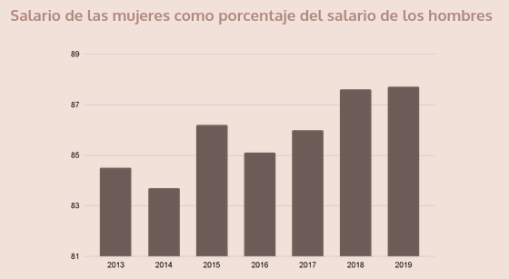
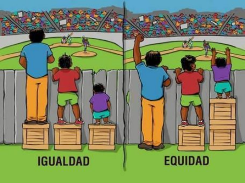
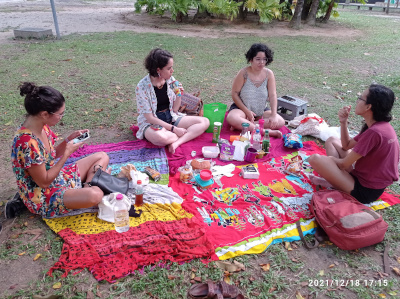

Importancia de las comunidades de mujeres para la equidad de género en la tecnología
Aunque hoy en día tenemos más niñas y mujeres escolarizadas, todavía no tenemos las mismas oportunidades. Según el informe Descifrar el código: La educación de las niñas y las mujeres en ciencias, tecnologías, ingeniería y matemáticas (CTIM), publicado por la UNESCO en 2020, en todo el mundo solo el 35% de los estudiantes de la educación superior en CTIM son mujeres y solo el 3% de las mujeres que cursan estudios en este ámbito eligen carreras vinculadas con las tecnologías de la información y la comunicación (TIC). Además, de acuerdo con el Global Gender Gap Report 2021 del Forum Económico Mundial, las mujeres representan un tercio o menos de la fuerza laboral en los sectores de inteligencia artificial, computación en nube, ingeniería y datos.
Brecha salarial de género
La brecha salarial de género es la diferencia entre los sueldos de los hombres y de las mujeres expresada como un porcentaje del salario masculino. Según la ONU MUJERES (2021), las causas que contribuyen para este fenómeno social son:
- Empleo a tiempo parcial;
- Peores empleos;
- Trabajos socialmente menos valorados;
- Autominisvaloración;
- Ignorancia de los empleadores.
Así, nos damos cuenta que la ausencia de mujeres en el sector de TIC colabora con el desajuste, principalmente, en dos puntos: peores empleos y trabajos socialmente menos valorados. Pese que en el sector de tecnología están los empleos con mejores sueldos, además sus puestos de trabajos son socialmente valorados. Mientras en la otra punta está la mayoría de nosotras, ocupando labores relacionadas con los cuidados y la reproducción de la vida, que infelizmente son social y económicamente desvalorizados.
El Panorama Laboral 2020 de la América Latina y el Caribe, publicado por la Organización Internacional del Trabajo en América Latina y Caribe (OIT), informa que el promedio salarial de las mujeres es un 12,3% inferior al de los hombres.

Países incluidos: Bolivia, Brasil, Chile, Colombia, Costa Rica, Ecuador, El Salvador, Guatemala, Honduras, México, Panamá, Paraguay, Perú, República Dominicana y Uruguay
La tendencia de mejora que vemos a partir de 2016 se detuvo con la pandemia. El Observatorio de Igualdad de Género de América Latina y Caribe (UNESCO-CEPAL) nos cuenta en su informe de 2021 que el 56,9% de las mujeres en América Latina se encuentran ocupadas en sectores en los que se prevé un mayor efecto negativo en términos del empleo y los ingresos. Además, hasta ahora el 5% de todas las mujeres empleadas en el mundo ha perdido su trabajo, en comparación con el 3,9% de los hombres.
Aporte de las comunidades de mujeres en TI para la paridad de género
Las comunidades de mujeres en tecnología puede aportar positivamente para el cambio de este contexto. Pongo luz en dos puntos importantes de actuación de las comunidades: promoción de equidad de género y de la representatividad de género.
Promoción de equidad de género
El modo más sencillo de enseñar equidad de género es hablar de su diferencia con la igualdad de género, pues es más común escuchar acerca de esta segunda.
La igualdad es dar la misma oportunidad, derechos y responsabilidades a todos. Es un principio jurídico universal, todavía no es una realidad. Tiene en cuenta que el objetivo 5 de los Objetivos de Desarrollo Sostenible 2030 de la ONU es “Lograr la igualdad entre los géneros y empoderar a todas las mujeres y las niñas”.
Todos no tenemos los mismos privilegios o la ausencia de ellos, así que el concepto de “equidad” introduce además un componente ético y tiene en cuenta las diferencias entre los grupos para asegurar una igualdad real.

Autoría desconocida
Anualmente el Forum Económico Mundial presenta un reporte acerca de la brecha de género, donde defiende que para disminuirla hay que mejorar 5 puntos claves: la participación política de las mujeres, el acceso a la educación, el acceso al mercado laboral, los índices de violencia de género y legislación existente destinada a asegurar medidas que garanticen la equidad de género.
En este ámbito, las comunidades de mujeres en tecnología se ponen, principalmente, en dos aspectos: el acceso a la educación y el acceso al mercado laboral. En la práctica se puede: garantizar que la mayor parte de las plazas de los eventos sean para mujeres; pensar en eventos hechos para mujeres, o sea, que tengan en cuenta nuestras condiciones (ej.: es sabido que la mayoría de las madres tienen que cuidar a sus infantes. Entonces, tener eventos con ambientes amistosos para niños y niñas posibilitará la participación de sus madres); hacer acuerdos con empresas que tengan políticas afirmativas de inclusión y diversidad, etc.
Promoción de la representatividad de género
Desde la infancia asistimos a la sociedad poner a nosotras en papeles muy específicos y crecemos escuchando adjetivos femeninos siendo ocupados para despreciar o desestimar a alguién, por ejemplo “estás manejando como una chica” o “hijo de puta” (¿¡trabajo sexual es legal, vale?!)
Necesitamos cambiar este tipo de pensamiento, incluso en nosotras. De ahí viene la importancia de dar visibilidad al trabajo de mujeres en CTIM. Criar espacios para que más de nosotras podamos hablar de nuestro trabajo e inspirar a otras mujeres y niñas, además decirles “ustedes pueden ser lo que quieran!!!”.
Es importante ver mujeres en sitios de poder y en los que no suelen ser ocupados por nosotras. Poco a poco empezamos a creer que también podemos ocupar estos espacios o los que nos dé en la gana. En este ámbito podemos construir comunidades hechas por mujeres y para mujeres.
Ya tenemos demasiados eventos y comunidades donde casi no hay mujeres en el liderazgo, en la organización o como panelistas. Las comunidades de mujeres en tecnología son espacios importantes para poner luz en trabajos y estudios de mujeres y chicas en todos los ámbitos, sea como talleristas, ponente, en la organización, marketing etc.
En Panamá hay referentes en tecnología muy importantes. Pongo luz en dos:
Susana Lau Hou, fundadora y CEO de EtyaLab, vicepresidenta de la sección de Panamá del IEEE y en 2018 fue considerada una de las 100 mujeres más poderosas por el periódico Forbes Centroamérica
Silvia Batista, jefa del Equipo de Respuestas a Incidentes a Seguridad de la Información del Gobierno de Panamá (CSIRT Panamá), además en 2019 ha formado parte de la junta del Desafío de Mujeres Cibernéticas 2019 de la Organización de los Estados Americanos (OEA).
Susana Lau Hou
Silvia Batista
PyLadies Recife
Tenendo en cuenta el contexto social y la importancia de las comunidades de mujeres en TI para cambiar las desigualdades sociales, desde PyLadies Recife desarrollamos actividades con los objetivos a continuación:
- Dar soporte a mujeres que deseen estudiar tecnología;
- Dar visibilidad a trabajo de mujeres;
- Estimular el uso de la tecnología com herramienta para solventar problemas sociales;
- Apoyar y organizar eventos inclusivos para las mujeres en la tecnología;
- Apoyar acciones de promoción a la diversidad (género, sexualidad y etnia) en los eventos sobre Python en Recife.
Mensualmente son puesto en marcha eventos (charla, taller, jornada o encuentro informal) cuya la agenda es compuesta por mujeres que pueden ser o no de la comunidad. Además, los temas son sobre tecnología, Python y cuestiones sociales. La comunidad compreende que hablar de diversos asuntos ayuda en el desarrollo de un espacio seguro para todas, a estrechar lazos, emponderar a las muejres, consolidar amistades y el trabajo en red. Con esto, el fortalecimiento de la comunidad.
Por el tema de la pandemia de COVID-19, entre febrero de 2020 y noviembre de 2021, no hubieron encuentros presenciales, todavía existieron acciones en línea, como la serie Quarentena Lives con charlas hechas por mujeres que participaron del programa de mentoria para formación de ponentes.
En diciembre 2021 hubo un encuentro informal, picnic, celebrado en una de las mayores zonas verdes de la ciudad. Todavía no hay previsión para regreso de las acciones presenciales.

Organizaciones de mujeres que tengan en cuenta su importancia social es un factor muy poderoso para el avance hacia una sociedad más justa y inclusiva. ¡Involucrate en una comunidad!
Citaciones
- Descifrar el código: la educación de las niñas y las mujeres en ciencias, tecnología, ingeniería y matemáticas (STEM). 2019
- Entrevista: Las niñas y las mujeres en educación y carreras CTIM en América Latina. 2020
- Conoce más sobre brecha salarial: causas, cifras y por qué hay que combatirla. 2021
- Panorama Laboral de la América Latina y el Caribe. 2020
- La autonomía económica de las mujeres en la recuperación sostenible y con igualdad. 2021
- ODS: Objetivo 5: Lograr la igualdad entre los géneros y empoderar a todas las mujeres y las niñas
- Global Gender Gap Report 2021
- La pandemia frenó el progreso de la igualdad de género. 2021
Este texto son los apuntes de la charla “Importancia de las comunidades de mujeres para la equidad de género en la tecnología” desarrollada en conjunto con Juliana Barros en el primer encuentro de PyLadies Panamá en el 05 feb 22.
Recursos:
-----